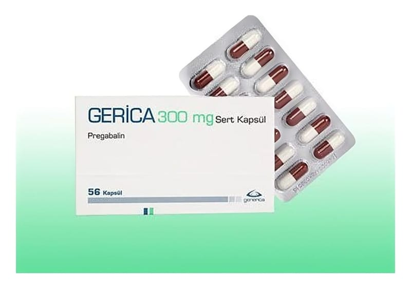

Gerica 300 mg Sert Kapsül, 56 Adet

Ne için kullanılır
KT · Bölüm 1GERİCA 300 mg kapsül, beyaz renkli kristalize toz dolu karamel-beyaz renkli bir kapsüldür. Her kapsül 300 mg pregabalin içerir ve 56 kapsül içeren blister ambalajlarda sunulmaktadır.
GERİCA, ağızdan alınan ve kısmi sara (epilepsi) nöbetlerinin tedavisinde diğer nöbet ilaçları ile birlikte ek tedavi olarak; merkezden uzak (periferik) sinir hasarına bağlı ağrının (nöropatik ağrı) tedavisinde ve yaygın anksiyete (kaygı) bozukluğunun tedavisinde kullanılan bir ilaçtır.
GERİCA, 18 yaş ve üstü olan yetişkinlerde kullanılır, 18 yaşın altındakilerde yeterli güvenlilik ve etkililik bilgisi bulunmadığı için, kullanımı önerilmez.
Nöropatik Ağrı GERİCA yetişkinlerde, merkezden uzak (periferik) sinirlerin hasar görmesinden kaynaklanan uzun süreli ağrılarda kullanılır. Şeker hastalığı ve zona gibi birçok hastalık sinirlerinize zarar vererek sinir hasarına bağlı ağrıya sebep olabilir. Bu ağrı hissi, sıcaklık, yanma, batma, vurma, zonklama, sızlama, uyuşma, karıncalanma şeklinde ya da elektrik çarpması, iğne batması gibi, delici, keskin veya kramp tarzında bir ağrı şeklinde tanımlanabilir. Nöropatik ağrı, duygu durumunuzda değişikliklere, uyuma sorunlarına ve yorgunluğa neden olup fiziksel ve sosyal yaşamınızı ve genel yaşam kalitenizi etkileyebilir.
Epilepsi GERİCA yetişkinlerde, sara nöbetlerinin bir çeşidini tedavi etmek için kullanılır (sekonder jeneralize konvülsiyonların eşlik ettiği ya da etmediği parsiyel konvülsiyonlar). Doktorunuz, almakta olduğunuz ilaçlarla durumunuzu kontrol altında tutamadığı zaman, GERİCA’yı tedavinize ekleyebilir. GERİCA sara nöbetlerinin tedavisinde tek başına kullanım için değildir ve her zaman sara nöbetlerini kontrol altında tutmak için kullanılan diğer ilaçlarla birlikte kullanılır.
Yaygın Anksiyete Bozukluğu GERİCA yetişkinlerde, yaygın anksiyete (kaygı) bozukluğunu tedavi etmek için kullanılır. Yaygın anksiyete (kaygı) bozukluğunun belirtileri kontrol etmesi zor olan, uzun süreli aşırı kaygı ve endişedir. Yaygın anksiyete (kaygı) bozukluğu aynı zamanda huzursuzluk, ani ve şiddetli heyecan, köşeye sıkıştırılmışlık hissi, kolaylıkla bitkin düşme, konsantrasyon güçlüğü, ani unutkanlık, alınganlık hissi, kas sertliği veya uyku sorunları gibi durumlara yol açabilir. Bu günlük yaşamın sıkıntılarından ve stresinden farklıdır.